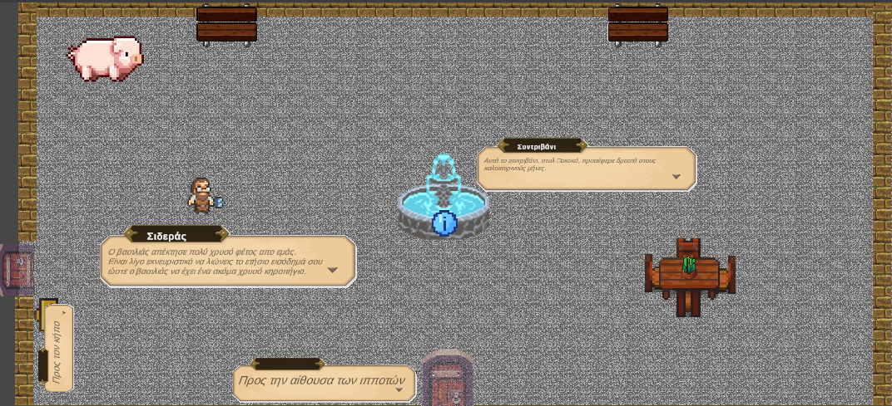
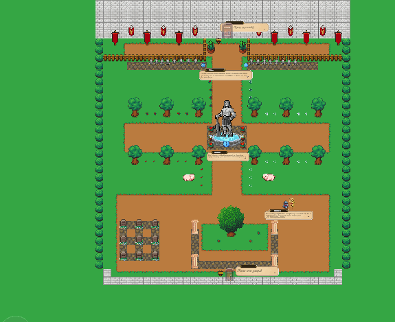
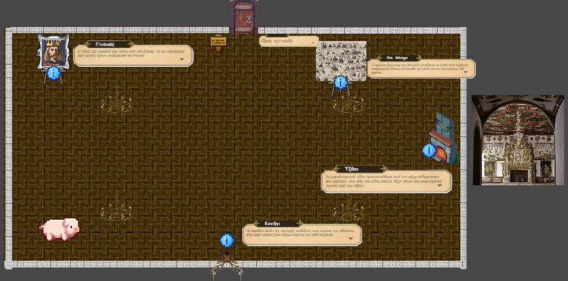
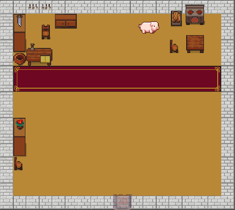
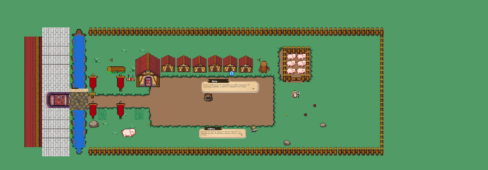
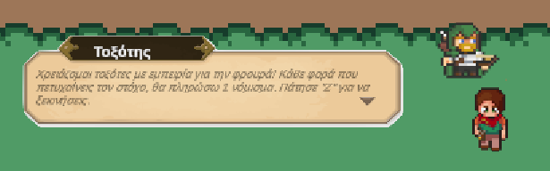
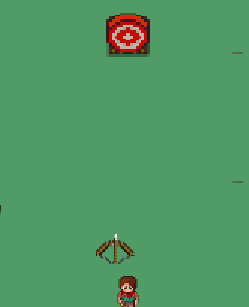
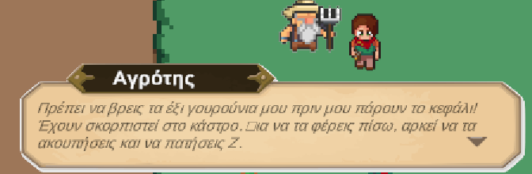

Αύλειος Χώρος (Courtyard)

Στην κεντρική αυλή, ο χρήστης μπορεί να περιηγηθεί ελεύθερα, να αλληλεπιδράσει με κιόσκια πληροφοριών και να επιλέξει σημεία ενδιαφέροντος για να μάθει την ιστορία του κάστρου.
Είσοδος Νάνων (Dwarf Entrance)

Η είσοδος των Νάνων προσφέρει ένα θέμα μυθολογίας με διαδραστικά στοιχεία: οι χρήστες μπορούν να δοκιμάσουν εργαλεία και να διαβάσουν πυκνές επιγραφές για τη λατομία του κάστρου.
Αίθουσα Ιπποτών (Knight Hall)

Στην αίθουσα των ιπποτών, η δραστηριότητα περιλαμβάνει δοκιμή εξοπλισμού και 3D παρουσίαση πανοπλίας με ήχο, καθώς και κουίζ για τον εξοπλισμό του μεσαιωνικού πολεμιστή.
Κατάστημα Αναμνηστικών (Shop)

Στο ηλεκτρονικό κατάστημα, ο χρήστης μπορεί να επιλέξει αντικείμενα, να δει λεπτομέρειες με zoom-in, και να ολοκληρώσει αγορές με εικονική πιστωτική κάρτα. Υποστηρίζονται πολλαπλά νομίσματα.
Χωριό (Village)

Το χωριό υποστηρίζει περιήγηση σε σπίτια τεχνιτών και αγρότες, με επιλογή βοτανικών δραστηριοτήτων και αφήγηση από τον μάγειρα για τα βότανα.
Minigame Τοξοβολίας (Archery Game)


Στο παιχνίδι τοξοβολίας πηγαίνουμε στον τοξοβόλο και για να ζητήσουμε το τόξο του και να αρχίσουμε το παιχνίδι πατάμε το Z, με την αρχή του minigame το τόξο κινείται αυτόματα δεξιά και αριστερά με σταθερό ρυθμό. Ο χρήστης πατάει το Z για να ρίξει βέλος και το X για να τερματίσει το minigame. Σκοπός του παιχνιδιού να πετύχουμε τον στόχο.
Βολή βέλους: "Z"
Τερματισμός παιχνιδιού: "X"
Minigame Συλλογής Γουρουνιών (Pig Hunt)

Στο παιχνίδι συλλογής γουρουνιών, ο χρήστης πρέπει να βρει 6 γουρούνια διάσπαρτα στις αυλές και στο κάστρο. Για συλλογή, αρκεί να πλησιάσει το γουρούνι και να πατήσει Z. Στη συνέχεια οδηγεί τα γουρούνια στον χωριάτη στο χωριό για να ολοκληρώσει την αποστολή.
Συλλογή: "Z" κοντά σε γουρούνι